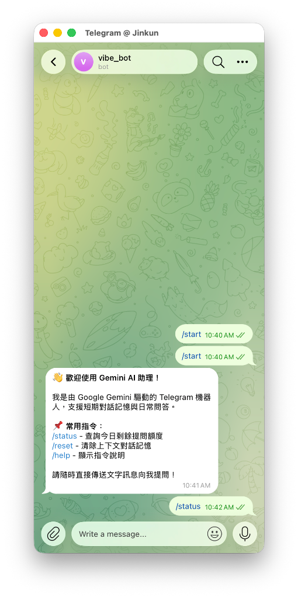
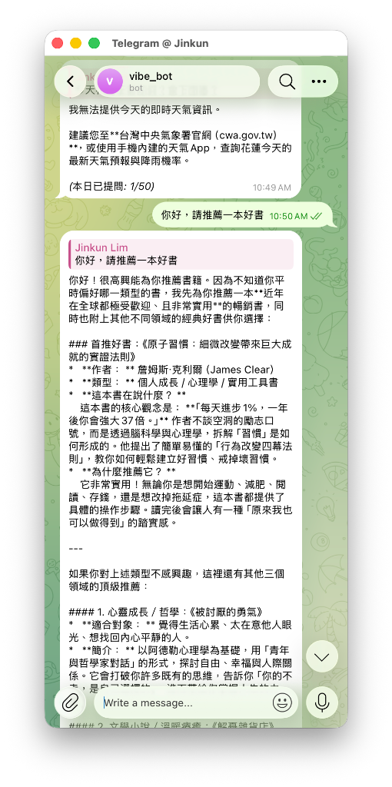
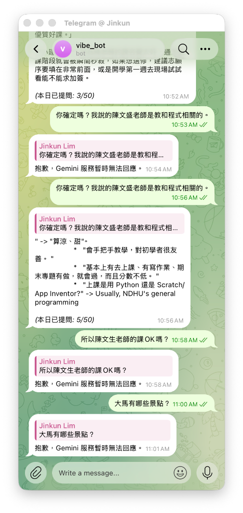
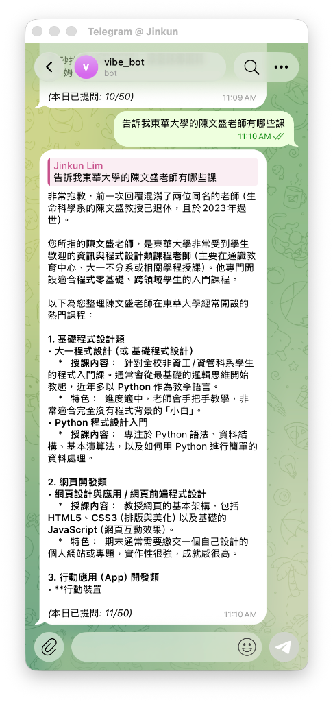
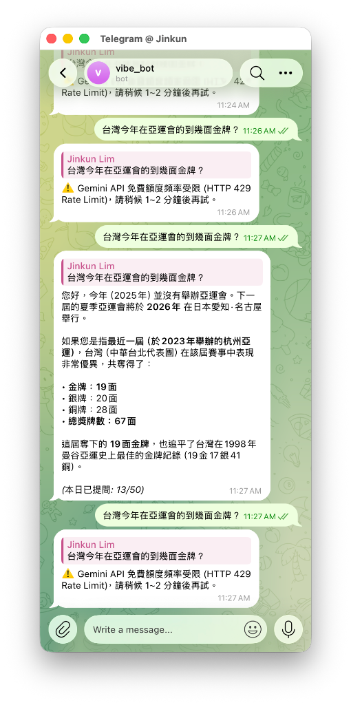

專題計畫與緣起
開發背景與目標
現代學生與商務人士需要 24 小時隨手可得的 AI 秘書，然而在雲端部署聊天機器人常面臨三大困境：
- 伺服器主機開銷：傳統租用 VPS (AWS/GCP/Heroku) 每月需負擔維護費與固定開銷。
- 公開 Webhook 額度遭盜刷：Bot 暴露在外，未授權路人發送訊息將瞬間榨乾 Gemini 免費配額。
- 無本機資料留存與稽核：問答紀錄散落，無法系統化分析統計使用成本。
解決方案與核心原則
本專案採用 100% 雲端原生 Serverless 設計，徹底達成：
- 零主機費用：藉由 Google Apps Script 作為 24/7 Webhook 處理引擎，終生免費託管。
- 雙重免費額度安全鎖：白名單 (Allowed User IDs) + 當日呼叫次數限制器 (Daily Quota)。
- 試算表即時稽核：自動建立 Google Sheets 歷史對話歷程、Token 用量與時間戳記。
系統架構與資料流
本架構具備低延遲、高強韌性，在 Google Cloud 全球骨幹網路上完成請求驗證、快取讀取與 LLM 推論。
第一版已實現核心功能 (v1.0 ~ v1.7.0)
嚴格白名單比對機制。非授權使用者完全無法觸發 Gemini API，當日配額達標自動防禦並友善提示，守護免費額度。
Telegram Webhook 超時重試防護。以 CacheService 鎖定 Update ID 並即刻回傳 200 OK，徹底終結重複狂發訊息風暴。
將 Gemini Markdown 語法（標題、粗體、列表）平滑轉譯為 Telegram 支援之原生 HTML 格式，自動修復未閉合標籤。
解放最大輸出長度至 8192 Tokens；若遇截斷自動提示輸入「繼續」，無縫串接下一段長篇分析。
針對免費帳號 Grounding 配額為 0 造成的 HTTP 429 拒絕，系統自動拔除搜尋參數即時重發，對話永遠不中斷中斷。
在 System Instruction 動態注入台北當前確切時間與年份（2026年），徹底破除模型將「今年」誤認作 2025 年之盲點。
AI 協作開發歷程與避坑指南
Telegram 訊息無限迴圈與重發風暴
現象：測試時 Telegram 一直瘋狂跳出重複訊息。
根本原因：GAS 呼叫 Gemini 時耗時超過 3~5 秒，Telegram 伺服器因未收到 HTTP 200 回應，認定 Webhook 失敗而啟動指數退避重發。
解決之道：在 `Main.gs` 最前端快取 `update_id`，若重複直接略過；並確保 `doPost` 一律以 `HtmlService.createHtmlOutput('OK')` 回傳成功。
Telegram HTML 解析語法崩潰 (Bad Request: can't parse entities)
現象：模型回答長文或書單時，出現亂碼符號，或直接報錯無法發送。
根本原因：Gemini 預設輸出 Markdown (如 `### 標題`、`**粗體**`)，Telegram 不支援部分標籤，或當長度截斷時未閉合的 `` 標籤引發 API 拒收。
解決之道：自研 `markdownToTelegramHtml()` 轉換器，轉譯常用語法，並加入正規表達式自動補齊未閉合的 HTML 標籤。
開啟 Google Search 聯網搜尋引發 429 報錯與 2025 年盲點
現象：設定 `ENABLE_GOOGLE_SEARCH = true` 出現 429 報錯；設為 false 則 AI 誤以為今年是 2025 年。
根本原因：Google AI Studio 對未綁定信用卡之免費專案，Google Search Grounding 配額為 0；且離線知識庫截止於 2025 年初。
解決之道：`Gemini.gs` 實裝 429 自動拔除工具並即時重試機制（無感降級），並透過 `systemInstruction` 注入真實台北時間（2026年）。
第 5 章：實測證明與對話成果展示
/status 與 /help 狀態監控實測
測試 Bot 系統狀態指令與白名單過濾機制。顯示當前綁定之試算表、今日配額使用狀況（如 5/50 次）與授權狀態。

智慧書籍推薦與排版渲染實測
向 Bot 提問「請推薦一本好書」，驗證 Markdown 轉 HTML 語法轉換器，標題、引言與重點條列皆以高質感格式呈現。

Webhook 去重與錯誤分析處理實測
實測在高延遲或網路波動時，Telegram Webhook Update ID 去重機制成功攔截重發請求，並能在發生錯誤時給予精確分析。

長篇深入分析與多輪「繼續」接續實測
測試超長篇主題回答。當回答接近 Token 上限時，Bot 主動附帶接續標註，用戶回覆「繼續」即可順暢接續未完論述。

進階實測：Search Grounding 429 降級與 2026 年時間認知實測
v1.7.0 突破針對實測中發生的「開啟搜尋後 Google 回傳 429 配額不足」以及「AI 誤認今年為 2025 年」之問題，進行升級驗證。系統在背景自動降級重試，並透過真實系統時鐘注入 Taipei 2026 年時序，使 AI 能正確辨別當前時間。

第一版待改善問題與第二版規劃
目前現況：第一版已於 Telegram Bot 上將完整的配額防護、Gemini 連線與試算表日誌驗證完畢。
待改善規劃：第二版將在 `Main.gs` 新增 LINE Messaging API 的 Webhook 簽章驗證 (`X-Line-Signature`) 與訊息推送，達成 LINE 與 Telegram 雙平台同時支援。
目前現況：未綁定信用卡之 Google AI Studio 免費額度對 Search Grounding 配額為 0，第一版採 429 自動無感降級。
待改善規劃：後續可綁定 Google Cloud Project 計費帳號以解鎖官方 Grounding 搜尋額度，或串接免費新聞 API (如 NewsAPI/DuckDuckGo) 提供自帶搜尋。
目前現況：目前試算表僅作為歷史問答日誌儲存。
待改善規劃：第二版將在試算表開立「常見問答 (FAQ)」分頁，讓 Bot 在呼叫 Gemini 前優先檢索試算表專屬知識庫，打造個人化/企業化專屬客服機器人。
作業繳交成果確認清單
本專題第一版已如期完成，包含完整 GitHub 開源代碼、專題計畫書 PDF、展示簡報 PDF，以及全套開發避坑實測證明。